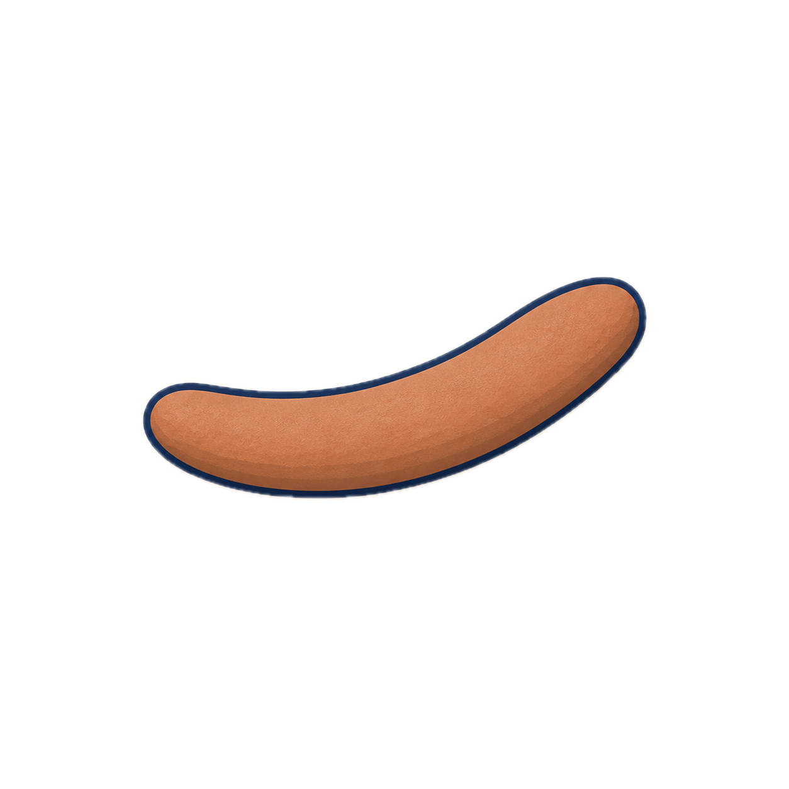
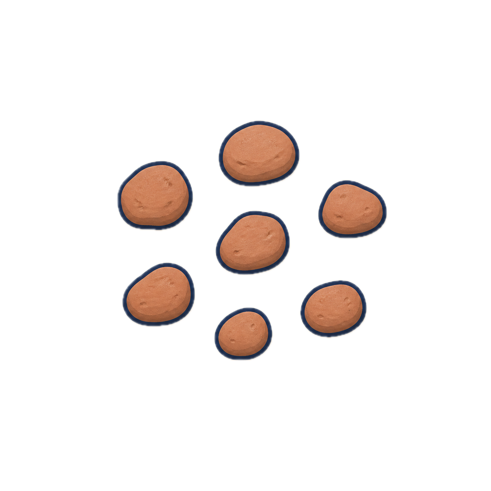
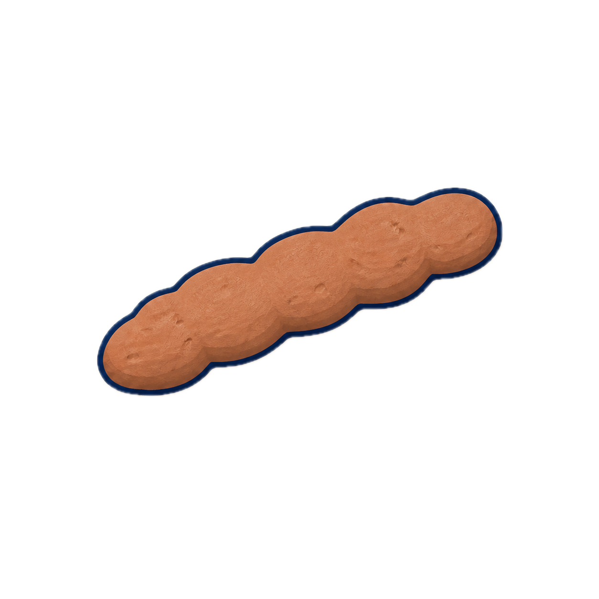
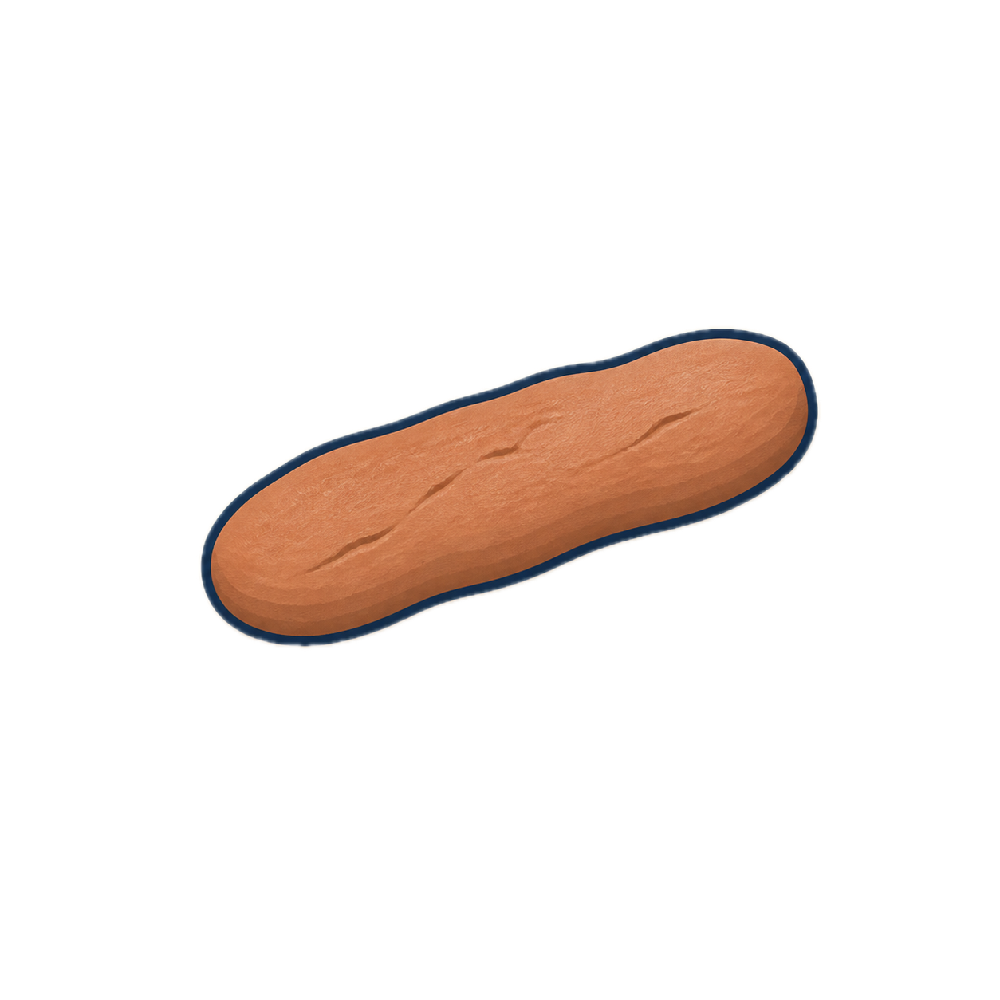
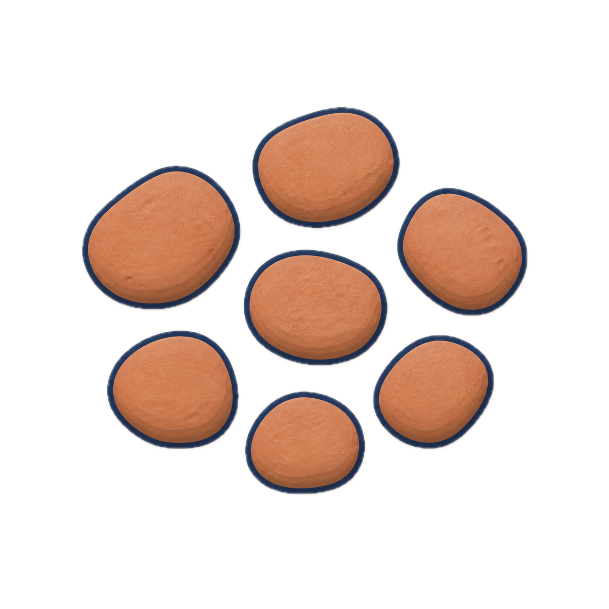
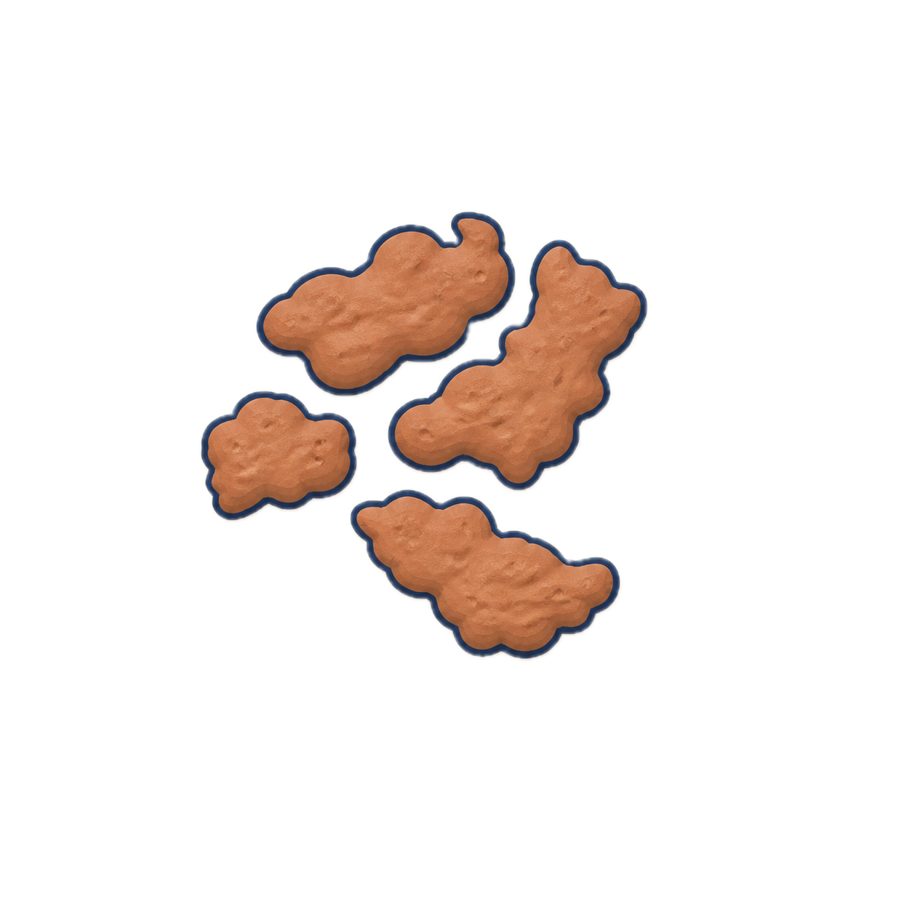
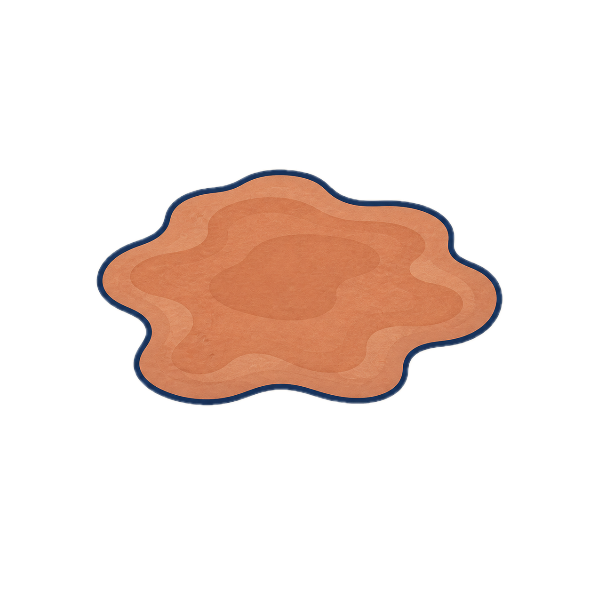

Salim's pick: Codex's page (Back, "Your gut check", the hero with the classified type, seven forms in one row with "Harder forms ← → Looser forms", then What this means / What may help / When to check in with a clinician, Ask docked) plus Fable's band tints: 3/4/5 green, 2/6 soft orange, 1/7 nearer red, the person's form outlined and labelled "You". The tint is on the surround, borderless; the stool drawings are Sweet's own shipped brown illustrations and are never recoloured. Two frames show how the hero's surround takes the band of the classified type.







Smooth, formed shapes are commonly expected. How you feel matters more than one photo.
If you feel well, keep your usual routine, fluids and fiber.
This app cannot see symptoms in a photo. Based on how you feel, watch for these:
Softer forms can happen for many everyday reasons. The form alone cannot show how concerning this is; how you feel and whether it keeps happening matter more.
Sip fluids steadily so you stay hydrated. Notice how you feel over the day.
This app cannot see symptoms in a photo. Based on how you feel, watch for these: